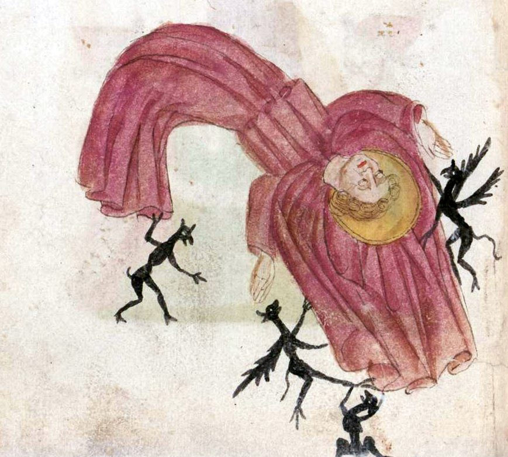

Wednesday, February the 25th, 2015
back to: title, date or indexes
While my brainpans remain empty of words, no doubt temporarily, I must reassure you lot that I am still living and breathing, so here—courtesy of my informant Poppy Nisbet—is a fifteenth century German illustration from the Book of Revelation.
